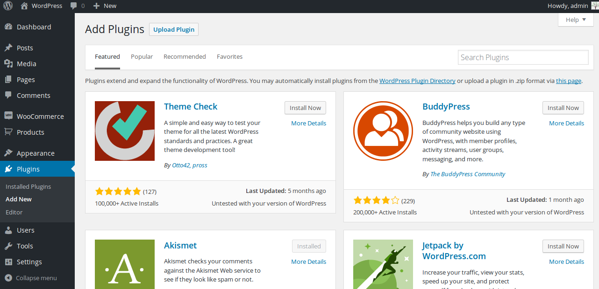

Thank you
Hi all,
WooCommerce Hide Products by User Role(s) is an Extension for WooCommerce and has some features to hide products based on User Roles. Site admin/Store Owner can decide to bring certain products for certain user role to sell in their site. Install this plugin, configure the products, hide/visible the products right away.
Once you configured the products by hidden then you cannot view that product(s) from their entire site.
Installation can be done in couple of mode
Automatic Installation mean, Once you download file from Codecanyon no need to unzip the file, you can directly upload it in WordPress Admin Dashboard
Go to Admin Dashboard
1. Admin Dashboard
2. Add New Plugin

3. Upload Plugin
4. Installing the Plugin
5. Activate the Plugin
Manual Installation mean, Once you download file from Codecanyon, unzip the file take up that unzipped folder upload it to plugins directory in wp-content folder
Using FTP Client or CPanel you can upload the plugin.
Once you uploaded you can directly access to Plugin Dashboard in Admin, find the plugin name called WooCommerce Hide Products finally activate the plugin done.
Once successfully activated the plugin 70% of work done, remaining 30% can be configured by visiting settings page of WooCommerce Hide Products which represent settings for each user roles.
It also works for Custom User Role
Same Options and its value may vary from different User Roles
1. Hide by -> It has couple of options one is
a) Products -> Select Individual Product(s) to Hide
b) Categories -> If Thousands of Products need to be hide Category is the best option to hide products in a bulk manner
If the Hide by Option was choosed "Products" then option to select Multiple Products, If it is Categories then Product Category will be listed as a chosen option to choose from
2. Include/Exclude Product(s) or Categories
a) Include (Hidden)
b) Exclude (Visible)
Include means it hide the selected products/associated products and then other products will be visible
Exclude means it shows the selected products/associated products and hence other products will be hidden
Settings Page of this Plugin
Q) Plugin Not Hiding my Products?
A) Please do cross check by switch back default wordpress theme to see if the problem persist with default, if so let us know, otherwise it incompatibility with your theme.
Q) Is it work with Custom User Role?
A) Yes it dynamically fetch and list Custom User Role in Settings, there you can configure to show/hide
Q) What does Include/Exclude mean?
A) It means simple term to Hide/Show, If i select Products and choose Include means selected products alone will hidden and other existing products will be visible, for Exclude Selected Products will be shown and other existing products will be hidden
We always happy to assist you :) Please feel free to contact us at codewoogeek@gmail.com or comment us in codecanyon.